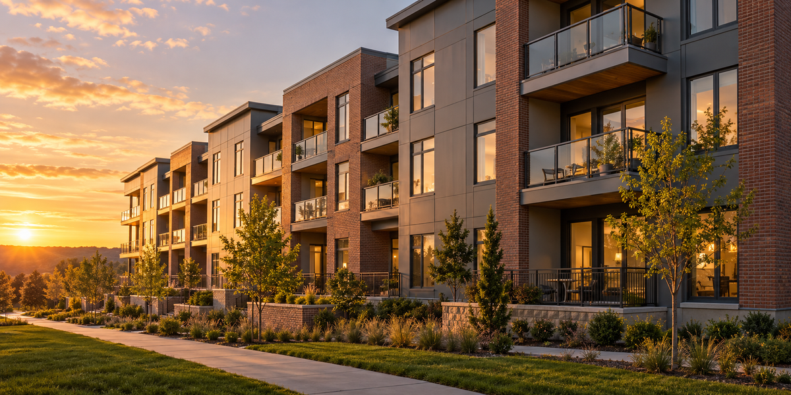
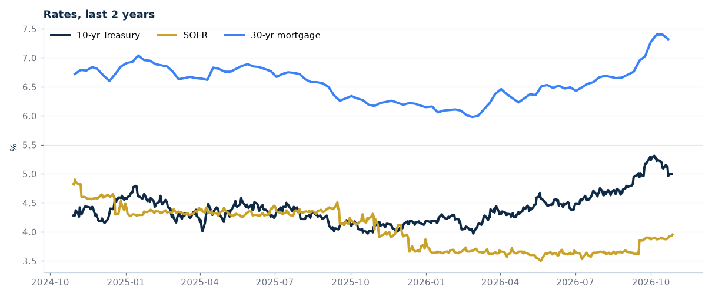
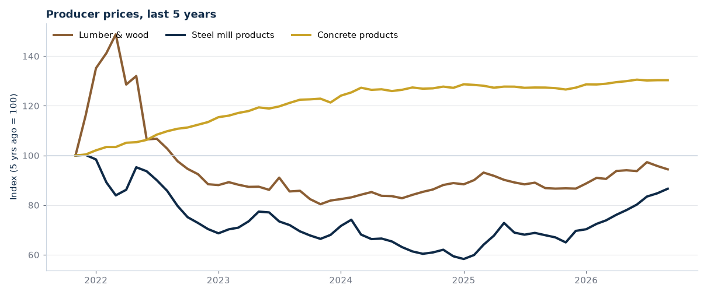
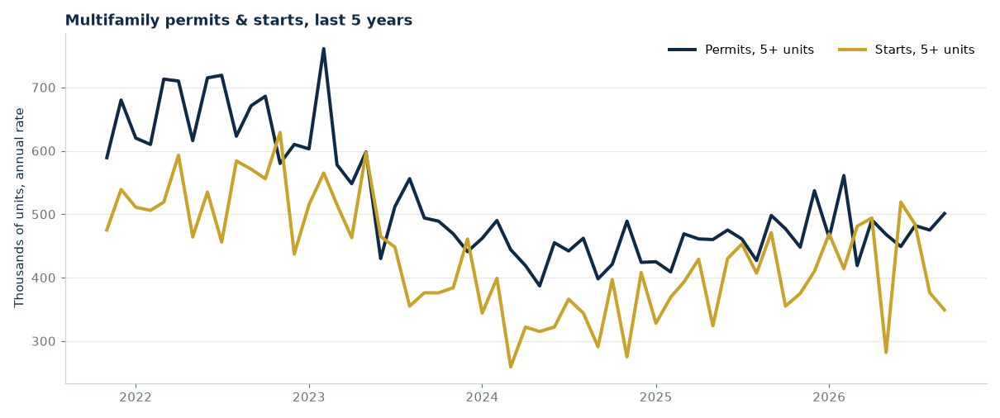

FRED: DGS10 (Oct 26), SOFR (Oct 27), MORTGAGE30US (Oct 22), WPU081 & WPU1017 (Sep 2026). Vacancy: Apartment List national index, Sep 2026. Cap rate watch: CBRE H1 2026 Cap Rate Survey.
Get this free every week
One 5-minute email on rates, rents, building costs, and new supply. Every number has a source.
Get the free weekly issueOne email a week. Unsubscribe in one click. We never sell your email.

Image: AI-generated
ISSUE #1 · WEEK OF OCT 28, 2026
Starts are falling. Steel is rising. Rents are flat.
Welcome to the first issue. Each week we pair the apartment market with the cost of building it. Every number has a source and a date. This week: new starts for 5+ unit buildings are down about 26% from a year ago, steel prices are up about 28%, and national rents are basically flat.
Market Pulse
Rents slipped in September, the first monthly dip since January. That is normal for fall. The bigger story is vacancy: it is high by historic standards, but it keeps edging down, which means the supply wave is being absorbed. Census puts the all-rental vacancy rate at 7.6% for Q3 2026, up from 7.3% in Q2 — a different measure that has not turned down yet.
Sources: Apartment List National Rent Report, published Sep 29, 2026 (data through Sep 2026), apartmentlist.com/research/national-rent-data · Census Housing Vacancies and Homeownership (HVS) release, Q3 2026 (census.gov/housing/hvs).
Rates & Capital

The 10-year Treasury sits at 5.00% and SOFR at 3.95%. That gap matters: floating construction and bridge loans price off SOFR, while permanent loans price off the 10-year. A long rate above the short rate means it can be cheaper to borrow short today than to lock in long-term debt.
Source: FRED — DGS10 (Oct 26, 2026), SOFR (Oct 27, 2026), MORTGAGE30US, Freddie Mac PMMS (Oct 22, 2026: 7.32%).
Materials Watch
| Producer price index | Sep 2026 | vs. 1 yr ago |
|---|---|---|
| Lumber & wood products (WPU081) | 282.3 | +8.7% |
| Steel mill products (WPU1017) | 388.6 | +27.6% |
| Concrete products (WPU1333) | 395.3 | +2.3% |

Steel is the line to watch. A jump of more than a quarter in a year hits mid-rise and podium projects hardest. If you are pricing a job now, ask your suppliers how long they will hold a quote.
Source: U.S. Bureau of Labor Statistics PPI via FRED, Sep 2026 (index values, not dollar prices). Concrete uses WPU1333 (concrete products); the ready-mix series WPU13330 was not available on FRED.
New Supply

Permits are holding steady, but starts are down sharply. That gap means projects are approved but not breaking ground — often a sign of tough financing or high costs. Fewer starts today means fewer new units hitting the market in two to three years.
Source: U.S. Census Bureau New Residential Construction via FRED (PERMIT5, HOUST5F), Sep 2026, seasonally adjusted annual rate.
Development Hotspots
DATA SIGNALS, NOT INVESTMENT ADVICE
San Francisco, CA +26%
Oakland, CA +16%
Boise, ID +11%
Garland, TX −4.4%
San Antonio, TX −4.3%
Arlington, TX −4.0%
These are year-over-year rent changes among the 100 largest U.S. cities. Fast rent growth can point to demand outrunning supply; falling rents often follow a wave of new deliveries, as Texas saw. Rents alone don't make a market — next issue adds jobs, population, and permits to this ranking.
Source: Apartment List National Rent Report, Sep 29, 2026 (city-level y/y rent, Sep 2026).
SMALL TOWN OF THE WEEK: WAUKEE, IOWA
Population grew 9.3% in one year (July 2024 to July 2025), to 34,890 people. That made it the 7th fastest-growing U.S. city of 20,000+ — and the only Midwest town in the top 10. It sits on the west edge of the Des Moines metro. Fast growth like this often means renters are arriving faster than new units. Growth alone isn't a reason to act; local permits and rents tell the rest.
Source: U.S. Census Bureau, Vintage 2025 city and town estimates, released May 14, 2026 (census.gov).
Deal Spotlight: Soltra Ironwood, North Phoenix
Leon Multifamily broke ground in October on Soltra Ironwood, a 343-unit Class A apartment project in North Phoenix. The pitch: jobs. TSMC's chip plant campus nearby is pulling workers into the area. First units are set to deliver in Q4 2027.
Why it matters: builders are still starting projects where big employers are moving in. Jobs come first, then renters. That is the pattern to watch.
Source: Multifamily Dive, "3 apartment communities break ground," Oct 27, 2026, citing Leon Capital Group's Oct 20, 2026 release.
Cap Rate Watch
There is no free, official national cap rate. The best free read is CBRE's twice-a-year survey. In its H1 2026 survey, the all-property average cap rate was about flat, even with a higher 10-year yield. But more brokers now expect cap rates to rise, and infill multifamily was the most bearish type. One example: stabilized multifamily in New York City moved from 4.5%–5.0% (H2 2025) to 5.0%–5.5% (H1 2026).
Plain read: sellers have not cut prices much yet, but buyers are asking for more yield.
Source: CBRE U.S. Cap Rate Survey H1 2026 (cbre.com), based on deals closed Jan–Jun 2026; NYC range as reported by CRE Daily. Broker estimates, not transaction averages.
One Tool: Cap Rate in 30 Seconds
Cap rate = NOI ÷ Price
Example (made-up numbers): a 40-unit building brings in $600,000 a year after operating costs (NOI). The asking price is $10,000,000. $600,000 ÷ $10,000,000 = 6.0% cap rate.
Quick check: compare it to the 10-year Treasury (5.00% today). A cap rate only about one point above a "risk-free" bond leaves a thin cushion — your financing and rent growth have to do the heavy lifting.
That's Issue #1.
Get this free every week
One 5-minute email on rates, rents, building costs, and new supply. Every number has a source.
Get the free weekly issueOne email a week. Unsubscribe in one click. We never sell your email.